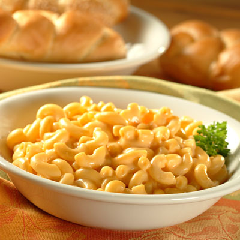

Macarrones con queso

Ingredientes
- 200g. de macarrones o coditos de pasta corta
- Queso parmesano rallado para gratinar
- 100g de queso cheddar rallado para la salsa
- 300mL de Leche entera
- Una cucharada de maicena
- 30g de mantequilla
- Una cucharaddita de mostaza a la antigua
- Sal y pimienta al gusto
Preparación
- Cocemos los coditos o macarrones
- Preparamos la salsa bechamel
- Mezclamos la pasta y lo colocamos en una fuente de horno
- Horneamos durante 15 minutos
- Servimos